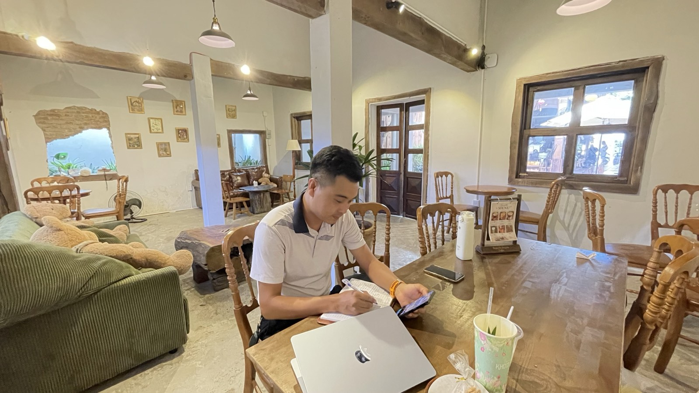

Mỏ vàng ở ngay dưới chân: tôi mở lại danh bạ và nhắn cho những người lâu rồi không hỏi thăm
Cuối tháng 10, ngồi tự rà lại một năm làm nghề, tôi gọi tên được ba sai lầm của mình. Sai lầm đứng đầu danh sách không nằm ở thị trường, cũng không nằm ở sản phẩm. Nó nằm trong chính chiếc điện thoại tôi cầm mỗi ngày.

Danh bạ nằm trong máy thì dễ quên. Chép ra giấy rồi mới thấy mình có bao nhiêu người.
Câu tôi tự nói với mình
Hôm đó tôi nói thành tiếng một câu, và về sau nghe lại băng ghi âm vẫn thấy đúng: "Mỏ vàng ở ngay dưới chân mà mình không biết cách đào."
"Mỏ vàng" ở đây không phải là khách hàng tiềm năng hiểu theo kiểu danh sách để gọi chào. Đó là vài trăm con người trong danh bạ: bạn học cũ, đồng nghiệp cũ, anh em từng làm chung công trình, người quen qua chạy bộ, qua quán. Họ biết tôi, phần lớn có thiện cảm với tôi. Vậy mà tôi gần như không hỏi thăm ai, và cũng không kể với ai là mình đang làm gì.
Nghe thì đơn giản. Nhưng tôi đã nhận ra chuyện này ít nhất ba lần trong năm, lần nào cũng gật gù, rồi lần nào cũng để đó.
Vì sao một việc dễ như vậy lại khó làm
Tôi thử thành thật với mình xem cái gì đang chặn tay. Có ba thứ:
- Không biết hỏi thăm cái gì. Hồi tháng 8 tôi ghi lại đúng câu này: rất muốn hỏi thăm người ta nhưng không biết nói gì, vài hôm lại nhắn "anh khoẻ không" thì thành ra rất dở. Hoá ra không phải thiếu ý chí, mà là thiếu nguyên liệu để nói, vì tôi không nhớ người ta đang làm gì, đang lo chuyện gì.
- Sợ bị nghĩ là "có việc mới tìm". Đây mới là rào cản thật. Tôi từng tự trấn an: "Mình có làm gì khuất tất đâu, mình đàng hoàng mà." Câu trấn an ấy lộ ra rằng tôi sợ người kia hiểu lầm lời hỏi thăm là một lời nhờ vả.
- Quen thế bị động. Tôi hay tự nhận: ai cần thì tôi giúp, giúp hết lòng. Nghe như một đức tính. Nhưng nhìn kỹ thì đó vẫn là chờ được cần, chỉ là bị động một cách tử tế.
Điều tôi hiểu ra: người ta chỉ nghĩ mình vụ lợi khi mình chỉ xuất hiện lúc cần
Có một câu tôi nói hồi đầu tháng 9 mà giờ tôi coi như kim chỉ nam cho việc này: "Nhiều khi mọi người cũng đâu cần gì đâu, mọi người chỉ cần chút tình cảm thôi."
Cách duy nhất để lời hỏi thăm không bị hiểu lầm là hỏi thăm đều, kể cả lúc mình chẳng cần gì. Tôi đã biết cảm giác đó: có những người lớn tuổi tôi vẫn gọi hỏi thăm sức khoẻ, không lợi ích gì cả, và chưa bao giờ thấy ngại. Việc còn lại chỉ là mang đúng cảm giác đó sang cả những người tôi có quan hệ làm ăn, hoặc có thể có trong tương lai.
Kết nối lại không phải để bán. Hỏi thăm trước, nói mình đang làm gì sau, và để người ta tự chọn có cần mình hay không.
Cách tôi đang thử
Lần này tôi làm khác ba lần trước ở hai chỗ: có công cụ cầm được trên tay và có một con số nhỏ mỗi ngày.
- Chép danh bạ ra một cuốn sổ giấy. Tôi mua hẳn một cuốn sổ, liệt kê lại từng người. Chép ra giấy chậm, nhưng chính cái chậm làm mình nhớ lại người đó là ai, gặp nhau ở đâu.
- Mỗi người một dòng, năm cột: tên · quan hệ · lần liên lạc gần nhất · người đó đang có chuyện gì đáng hỏi · bước tiếp theo kèm ngày. Cột thứ tư chính là "nguyên liệu để nói" mà trước giờ tôi thiếu.
- Mỗi ngày nhắn một số ít người, đủ ít để không bỏ cuộc sau ba hôm, giống như chạy 5 km mỗi sáng chứ không chạy 30 km một lần rồi nghỉ cả tháng.
- Tin nhắn đầu tiên chỉ có hỏi thăm. Chuyện mình đang làm nghề gì chỉ kể khi người ta hỏi lại, hoặc ở lần trò chuyện sau.
- Ghi lại ai trả lời, ai không. Số người trong danh bạ không nói lên gì. Số người còn trả lời mình mới là số đo thật của mạng lưới.
Còn nếu vẫn ngại, tôi bắt đầu bằng một tin nhắn cho đi thay vì hỏi han suông: chia sẻ một thông tin người đó đang quan tâm, mời một bữa ở quán, hay trả lời giúp một câu hỏi về nhà đất mà người ngoài nghề phải mất cả buổi mới tra ra. Người đã nhận của mình vài lần thì đến lúc mình gọi, không ai thấy đó là nhờ vả.
Kết quả? Chưa có gì để khoe
Tôi viết bài này khi việc mới bắt đầu, nên không có con số đẹp nào để kể. Có những tin nhắn được trả lời rất nhanh và rất vui, có những tin nhắn im lặng. Cả hai đều được ghi vào sổ. Vài tháng nữa, nếu còn đủ kiên trì, tôi sẽ kể lại cuốn sổ đó cho anh/chị nghe.
Nếu anh/chị cũng đang có một danh bạ dài mà lâu rồi không mở, thử chọn một người hôm nay thôi. Không cần lý do. Một câu hỏi thăm thật lòng là đủ.
Bài viết là trải nghiệm cá nhân đang trong quá trình thử, chưa phải phương pháp đã kiểm chứng. Không nêu tên bất kỳ ai trong danh bạ; các trích dẫn là lời của chính tác giả, ghi lại trong các buổi tự ghi âm năm 2026.
"Rồi, ngày mới tốt lành nhé."
Sống tử tế · Kiếm tiền hạnh phúc · Cho đi giá trị
Lâu rồi mình chưa nói chuyện?
Nếu anh/chị là một trong những người lâu rồi tôi chưa hỏi thăm, hoặc chỉ muốn trò chuyện về nhà đất Nha Trang, cuộc sống, chạy bộ, cứ nhắn cho tôi một câu. Tôi trả lời bằng chính số này.
Nhắn Zalo — 0869 668 638